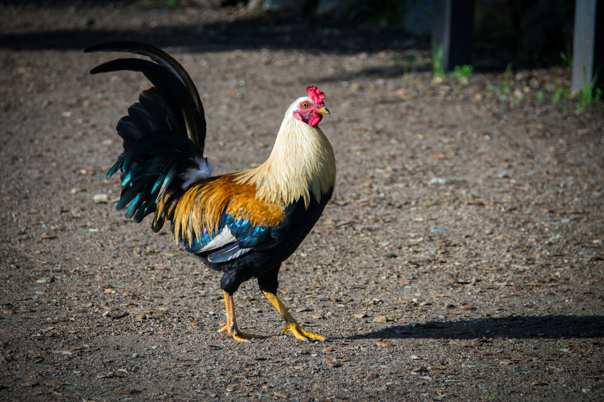
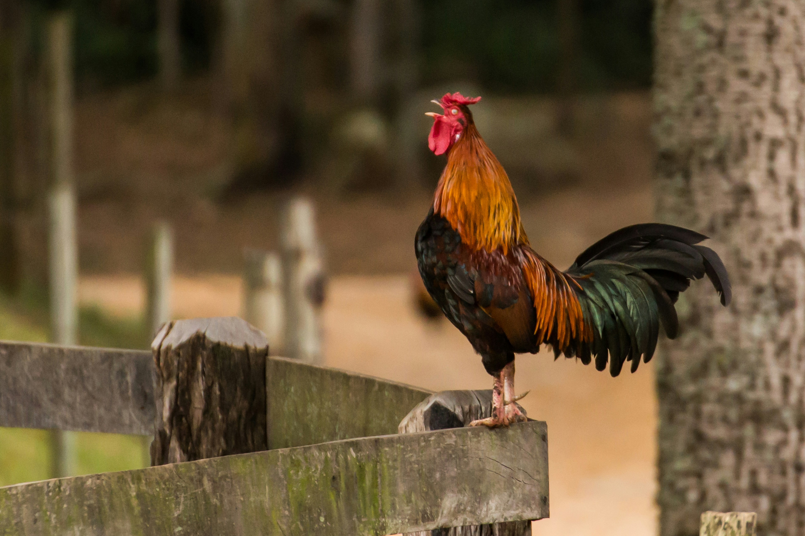
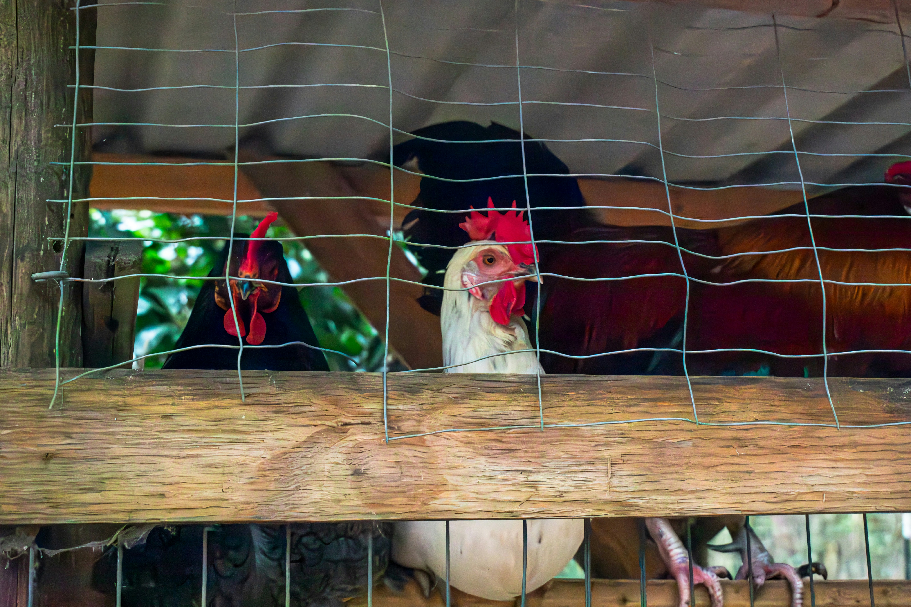
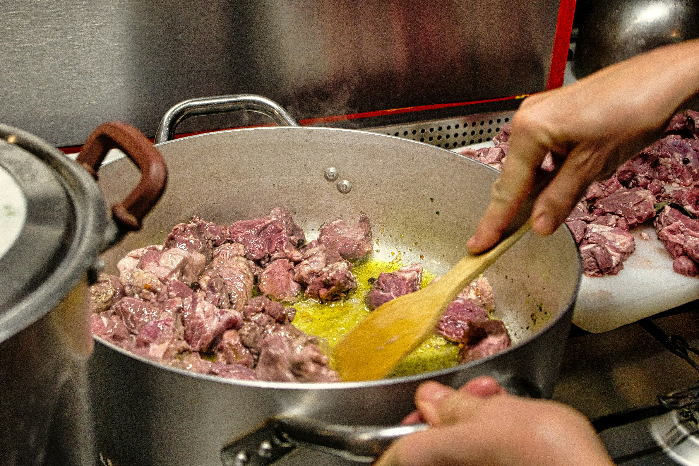

Gall del Penedès
Tradició, territori i una raça única del Penedès
El Gall del Penedès és una raça avícola autòctona recuperada gràcies a l'esforç de criadors locals i entitats de preservació del patrimoni genètic agrícola. Durant dècades va estar en perill d'extinció, però avui és un símbol de la identitat gastronòmica del territori.
La seva carn, ferma i saborosa, és resultat d'una criança en llibertat i una alimentació basada en cereals i productes naturals. Els xefs de la zona l'han incorporat als seus menús com a ingredient estrella, recuperant receptes tradicionals que reivindiquen el producte local.
A les fires i mercats del Penedès és habitual trobar-lo com a protagonista, ja sigui en forma d'escudella, rostit amb herbes del camp o en preparacions més modernes que fusionen la tradició amb la cuina d'avantguarda.
Galeria



Vídeo
Font: Vídeo il·lustratiu